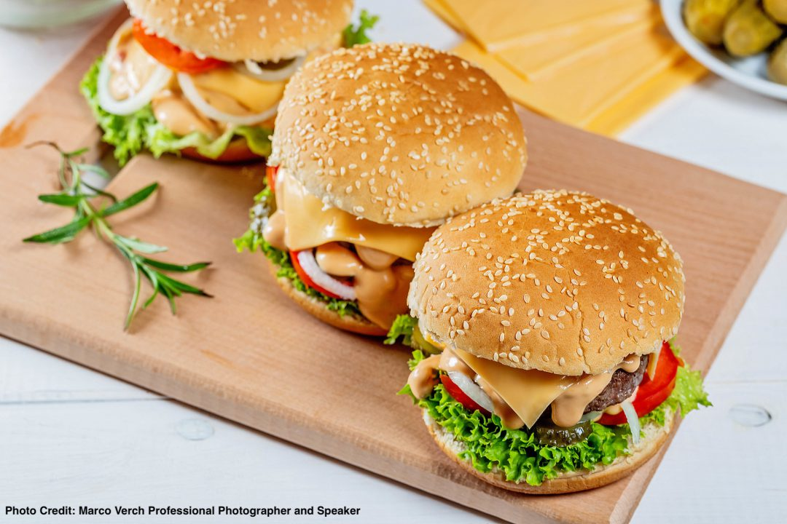

 |
1999年創立的漢堡，在競爭的美式早午餐市場佔有一席之地。火紅色招牌店觀的形象，深植在消費者心中。為了讓品牌整體形象與質感更為提升，在2015年推出嶄新設計的LOGO與美式廚房新店型，極力推廣美式早午餐與全日餐店型，為競爭又緊湊的早午餐市場注入清新、休閒、舒適的用餐體驗。
漢堡擁有國際觀的產品研發團隊，精心開發多元化的餐點；並且不斷推陳出新，產品內容上除了有各式美味的漢堡、三明治、蛋餅、飲料外；還有美式盤餐、義大利麵、義式燉飯…等系列，再透過店觀設計營造出Brunch和全日餐的舒適環境，大大滿足消費者對西式餐飲的需求。結合多變的行銷活動、創意包材設計與多元的異業合作，讓品牌更為活潑年輕與貼近市場，成漢堡的一大特色。